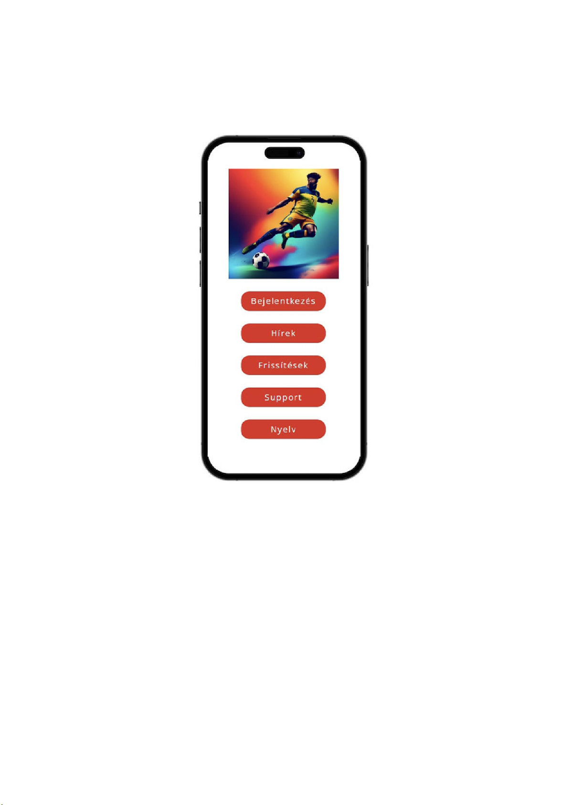
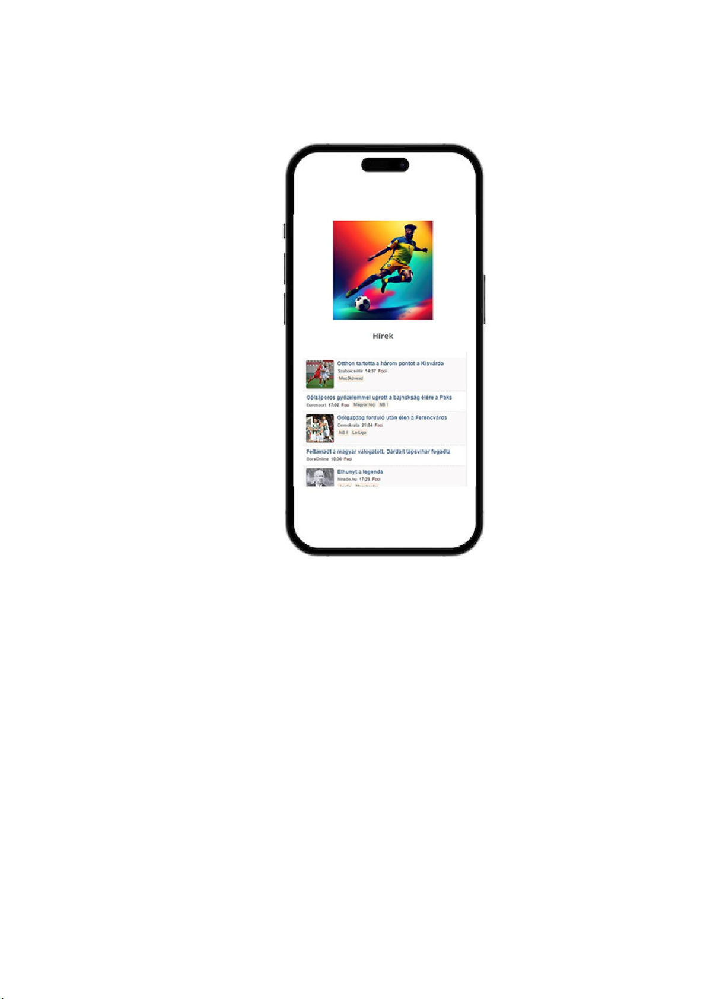
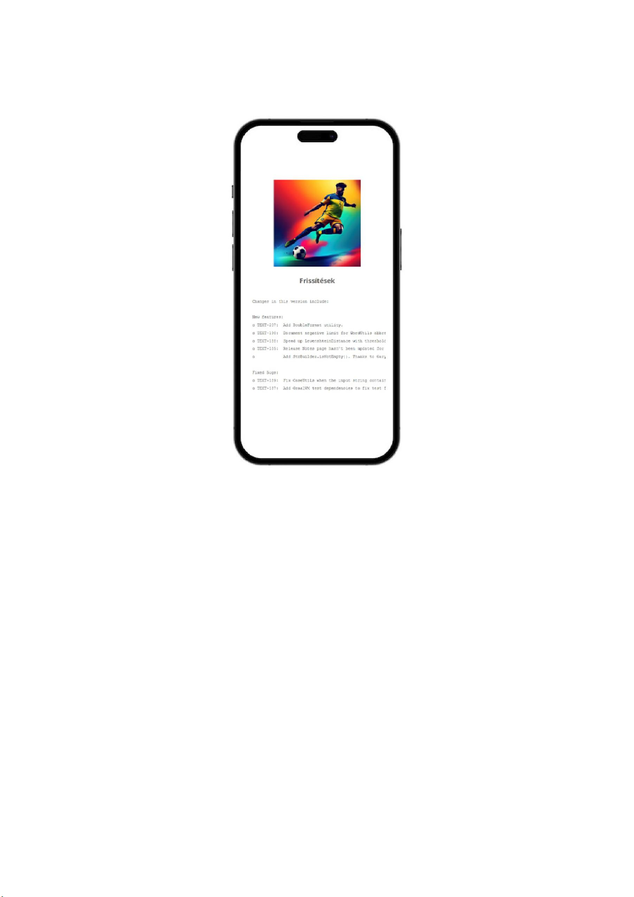
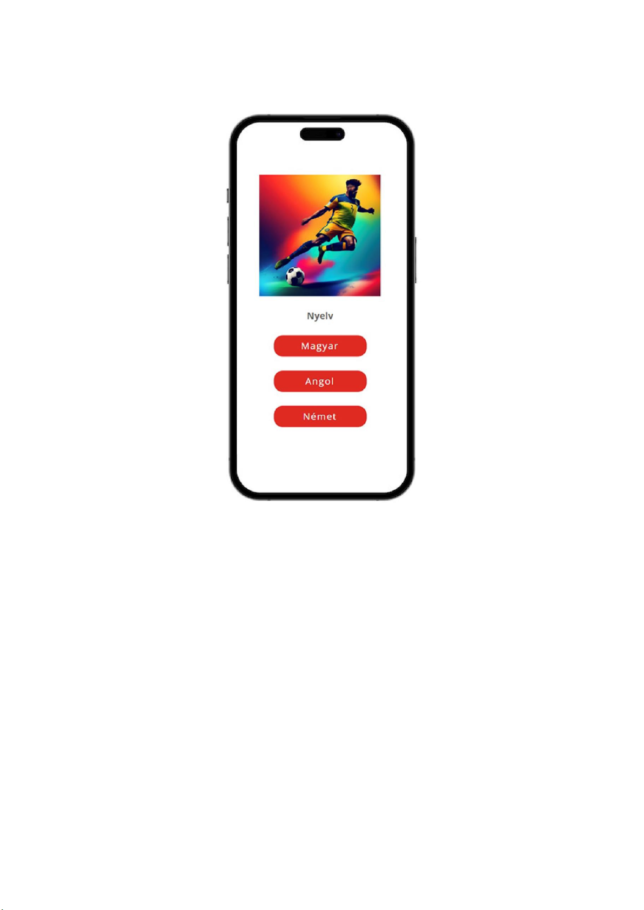
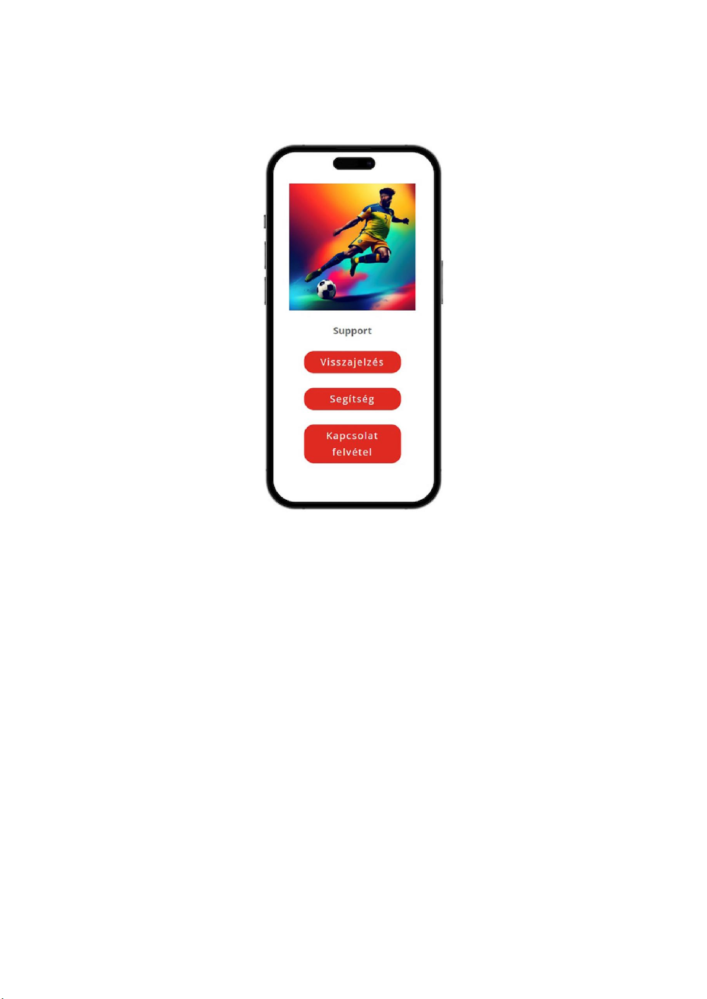
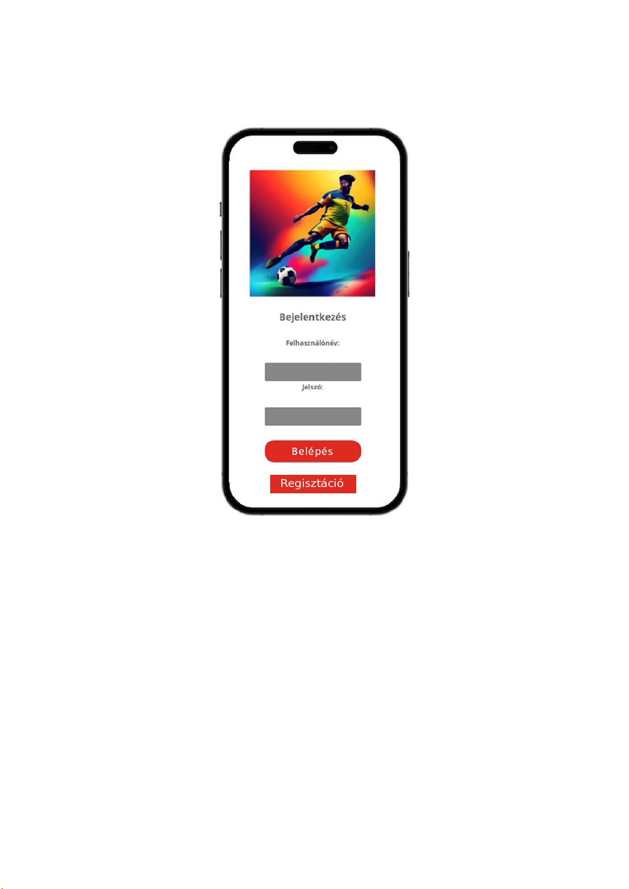
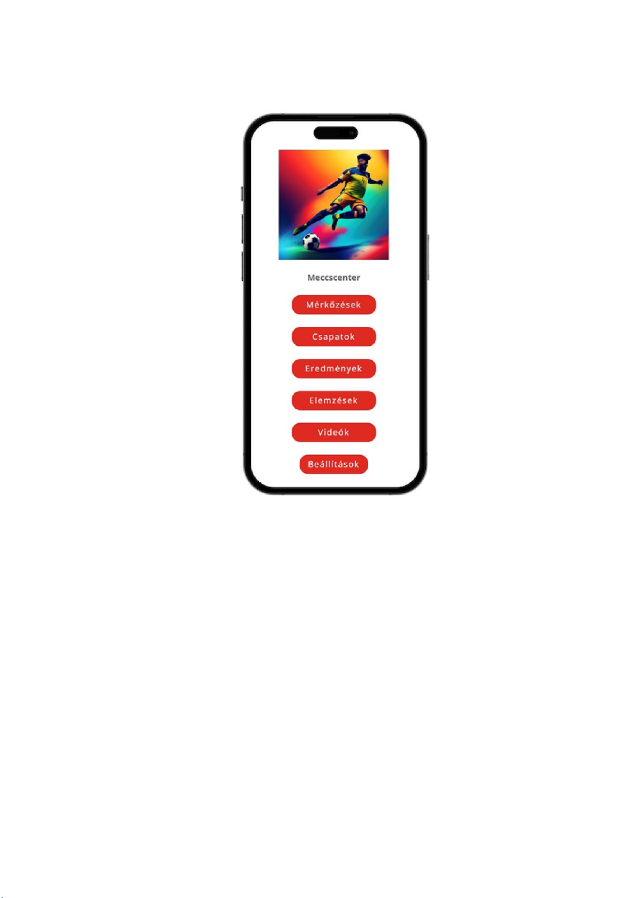
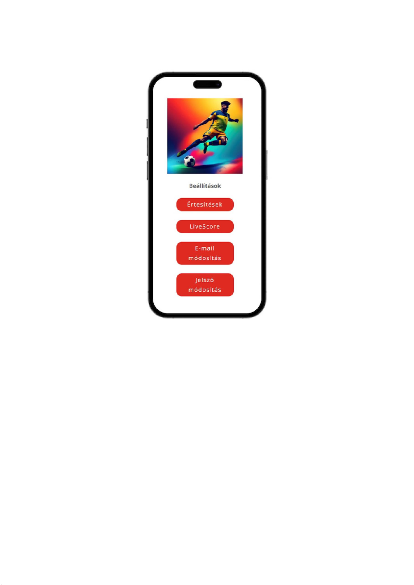

2. Felhasználói felület
2.1 Kezdőlap

Az alkalmazás kezdőoldala egyszerre kínál gyors bejelentkezési lehetőséget és könnyű hozzáférést az alábbi funkciókhoz:
- Bejelentkezés: Azonnali hozzáférést biztosít a felhasználóknak a személyes fiókjukhoz, így gyorsan és egyszerűen elkezdheik az alkalmazás használatát.
- Hírek: Friss és releváns hírek állnak rendelkezésre, hogy a felhasználók mindig naprakészek legyenek a legfontosabb eseményekkel kapcsolatban.
- Frissítések: Az alkalmazás újdonságairól, fejlesztéseiről és változásairól való értesítések is érhetők el, hogy a felhasználók mindig a legújabb verziót használhassák.
- Support: A támogatási részleg segítséget nyújt a felhasználóknak, ha bármilyen kérdésük vagy problémájuk merülne fel az alkalmazás használata során.
- Nyelv: Az alkalmazás nyelvének testreszabhatósága lehetőséget ad a felhasználóknak arra, hogy az előnyben részesített nyelven használják az alkalmazást, ezáltal még
kényelmesebbé téve az élményt.
2.2 Hírek

Az alkalmazás hírek szekciója egy kiváló forrás a legfrissebb football hírek számára. Így a
felhasználók részletesen tájékozódhatnak a futball világában zajló eseményekről, esetlegesen kedvenc csapataikról vagy játékosaikról. A szekció gyakran tartalmazza a
legújabb mérkőzéseredményeket, gólszerzőket, sérüléseket és egyéb érdekességeket.
A felhasználók könnyedén böngészhetnek és megtalálhatják a számukra releváns
információkat, legyen szó nemze bajnokságokról, vagy éppen átigazolási hírekről. A
hírek részletes leírásokkal, interjúkkal és képekkel is kiegészülnek, hogy a felhasználók teljes körűen értesülhessenek a futball világának eseményeiről. Ezen információk
segítségével a felhasználók mindig naprakészek lehetnek, és teljes értékű focirajongóként élvezhek az alkalmazás hírek szekcióját.
2.3 Frissítések

Az alkalmazásunk frissítések oldala mindig izgalmas és fontos tartalmat kínál a
felhasználóknak. Itt közvetlenül értesülhetnek a legújabb fejlesztéseinkről, új funkcióinkról és egyéb változásokról.
A frissítések részletes leírásokat tartalmaznak minden újításról, lehetőséget
teremtve a felhasználóknak, hogy mélyebben megismerjék és kihasználják az alkalmazás legújabb lehetőségeit.
Emellett itt találhatók információk az esetleges hibajavításokról és teljesítményoptimalizációkról, amelyek segítik az alkalmazás gördülékeny és hatékony működését. A frissítések oldalán való rendszeres látogatás lehetőséget nyújt a felhasználóknak arra, hogy mindig naprakészek legyenek és kihasználják az alkalmazás legújabb előnyeit és fejlesztéseit
2.4 Nyelvek

Az alkalmazás Nyelv beállításainál könnyedén kiválasztható a kívánt nyelv a
felhasználók számára. Az elérhető lehetőségek közö szerepel a magyar, angol és német nyelv. Ezzel a testreszabhatósági opcióval mindenki számára biztosítjuk a maximális kényelmet, hogy az alkalmazás használata személyre szabott és még élvezetesebb legyen.
2.5 Support

Az alkalmazás Support oldala mindent magába foglal, hogy a felhasználók teljes körű segítséget kapjanak. Itt található a Visszajelzés lehetősége, ahol szabadon megoszthatják
gondolataikat, javaslataikat vagy akár problémáikat is az alkalmazással kapcsolatban.
Emellett rendelkezésre áll a Segítség szekció, ahol részletes információk és útmutatók
segítik a felhasználókat az önálló problémamegoldásban. A kapcsolat felvétel funkció lehetővé teszi a felhasználó számára az egyszerű és gyors kapcsolat felvételt a klubbal és az edzővel
2.6 Bejelentkezés

Az alkalmazás kezdőoldala lehetővé teszi a gyors bejelentkezést vagy regisztrációt. A
"Bejelentkezés" gombra kattintva már meglévő felhasználók könnyen hozzáférnek. Ha a
felhasználó új itt, egyszerűen választhatja a "Regisztráció" lehetőséget. Gyors, hatékony és barátságos felületünk segít az alkalmazásunk gyors használatában.
2.7 Meccscenter

Az alkalmazás Meccscenter oldala a sportrajongók számára optimalizált felhasználói felüleel rendelkezik. Az oldalon könnyedén navigálhat a Mérkőzések, Csapatok, Eredmények, Elemzések, Videók és Beállítások kategóriák között. Minden egyes
szekcióban megtalálhatók a legfrissebb információk, statisztikák és izgalmas tartalmak, hogy a felhasználók mindig naprakészek lehessenek és egy helyen megtalálhassák a
keresett adatokat. A Meccscenter oldalán a sportélmény teljes körű és testreszabott, ahol minden szükségesfunkció könnyedén elérhetővé válik a felhasználók számára.
2.8 Személyes beállítások

A Személyes Beállítások oldalon számos opció elérhető a felhasználók részére. Értesítéseik testreszabhatók, így csak a számukra fontos információkra kapnak figyelmeztetést. A Live Score funkcióval a meccsek nyomon követhetők valós időben, beleértve az eredményeket és a statisztikákat. Az email cím és jelszó módosítása egyszerűen elvégezhető, biztosítva ezzel a felhasználók számára a személyes adatok könnyű kezelhetőségét és biztonságát.

 Kezdőlap
Kezdőlap